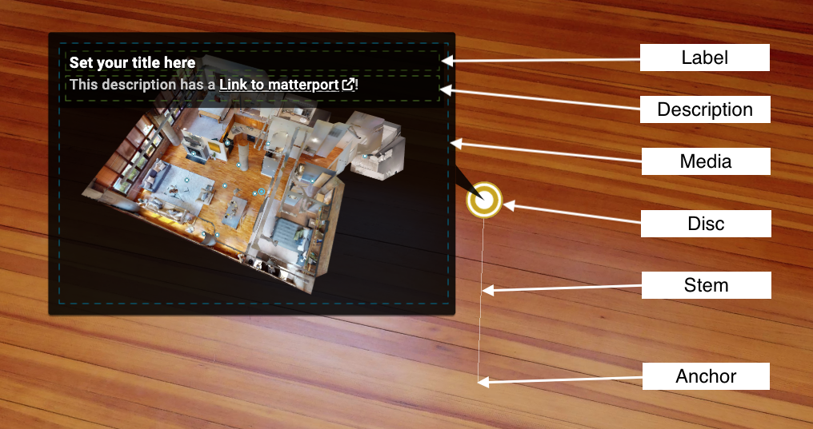

The Mattertag.add function takes a single or an array of MattertagDescriptor objects. The following properties are supported by MattertagDescriptor:
| Property | Required | Description |
|---|---|---|
| anchorPosition | yes | The mattertag anchor, It is typically attached to a surface on the matterport model. |
| stemVector | yes | The mattertag stem. It’s length determines how far it will be offset from the anchor position. |
| color | no | The color of the disc. |
| description | no | The mattertag description. Links can be included in the description. |
| label | no | The mattertag label. |
| mediaType | no | The mediaSrc type. This can be photo, video, or rich media. This property must be set to display the media source. |
| mediaSrc | no | A url to the media. The urls must be supported by embed.ly |
| floorId | no | The floor identifier associated witht the mattertag. |
 Mattertag Properties
Note: To find an anchor position, stemVector and floorId for your model, you can use the Intersection Inspector Tool
Adding a mattertag with a label and no stem
var mattertagDesc = {
label: 'Hello Mattertag',
anchorPosition: { x: 1.39, y: 2.00, z: -0.122 },
stemVector: { x: 0, y: 0, z: 0 }
};
sdk.Mattertag.add(mattertagDesc).then(function(mattertagId) {
console.log(mattertagId);
// output: TODO
});
Adding multiple mattertags at once
var mattertags = [{
label: 'Tag 1',
anchorPosition: { x: 0, y: 0, z: 0},
stemVector: { x: 0, y: 0, z: 0}
},{
label: 'Tag 2',
description: '<3 this tag!',
anchorPosition: { x: 1, y: 0, z: 0 },
stemVector: { x: 0, y: 0.5, z: 0}
}];
sdk.Mattertag.add(mattertags).then(function(mattertagIds) {
console.log(mattertagIds);
// output: TODO
});